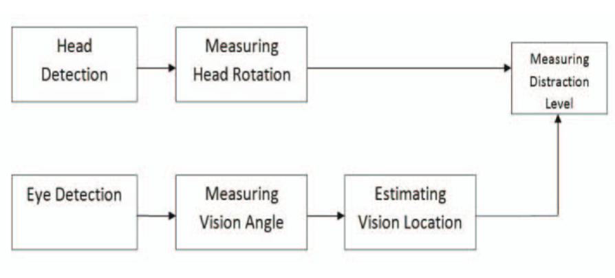
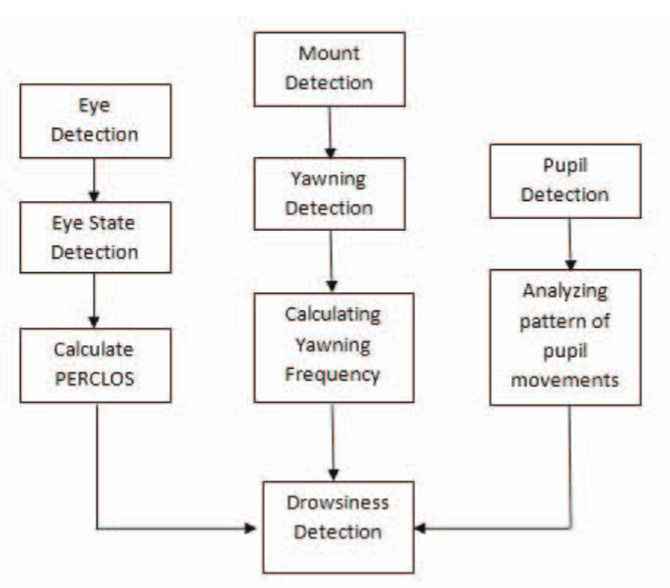
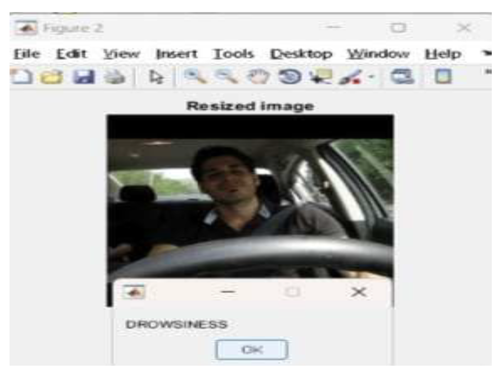

Driver Management System
A System used to Monitor Driver to Prevent Accidents ☠️
About Me
Hello👋, I'm Sachin.
Masters Embedded System Engineering.
- GitHub: sachinkum0009
- Website: Blog
Agenda
- What is DMS?
- Motivation behind DMS
- Technical Details
- Commercial Applications
What is DMS?
Driver Monitoring System
- Driver Attention Monitoring
- Driver Drowsiness Detection
- Alert Warning
- Driver Identification
Motivation behind DMS
- Driver Distraction
NHTSA estimates that approximately 25% of police-reported crashes involve some form of driver inattention
Technical Details
- Sensor Selection
- Data Collection
- Pre-processing & Feature Extraction
- Deep Learning Model
- Real-time Analysis
- Alerts and Warnings
- Integration with ADAS/AD
- Validation and Testing
- Continuous Improvement
Distraction Detection System
Drowsiness Detection System
Drowsiness Detection using Deep Learning
CNN is used for alert generation, image classification, feature extraction and detection
Commercial Applications
- Saab's Driver Attention Warning System
- Toyota - Driver Monitoring System
- Smart Eye AB - Driver Monitoring System